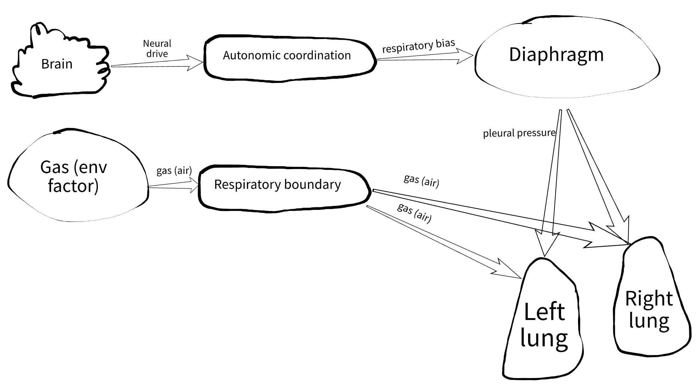
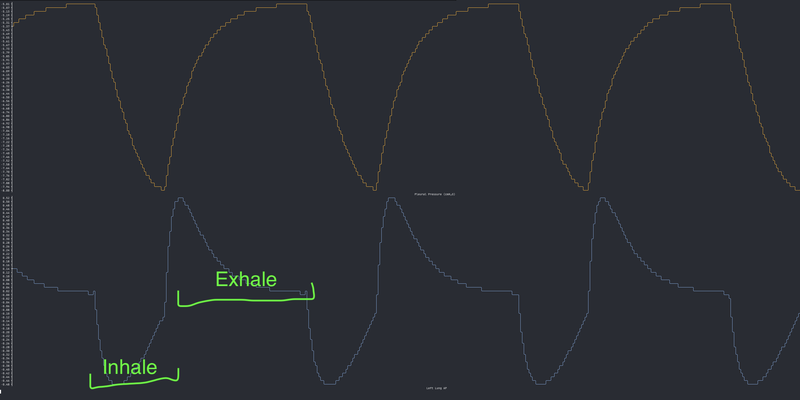
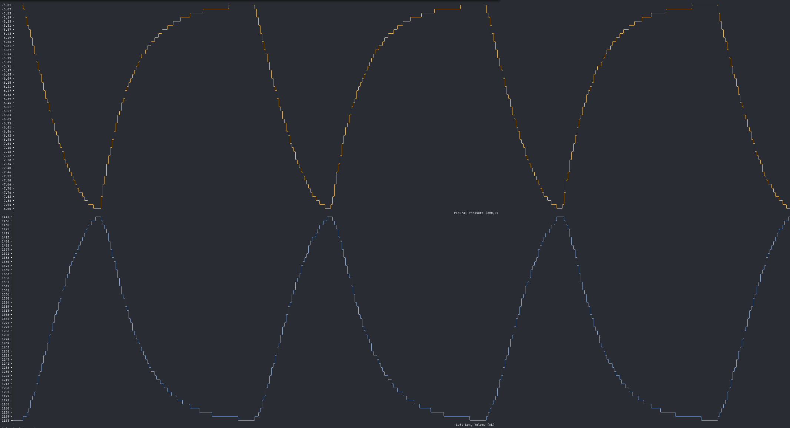

April 21, 2026
Behind the Breathing Mechanics
Welcome to another episode of human body simulation.
In the previous post we talked about the brain and the heart. At that point, our artificial human had a heartbeat.
Now it's time to implement breathing. Hard to think of a stronger liveness signal.
From oscillation to physiology
Initially, I just wanted a simple oscillating signal going from -1 to 1 to represent inhale and exhale phases.
Then I looked into actual breathing physiology and, unsurprisingly, it is not that simple. So I moved toward a more mechanical and realistic approach.
Architecture first
The breathing system is represented by three components.

Respiratory boundary
This component receives gas signals from the environment such as chemical composition, humidity, pressure, and temperature, and converts them into inspired gas.
It mimics the nose and airways up to the trachea. Here we will simulate:
- warming and humidifying air
- basic mechanical filtering
- possibly smell sensing (still undecided)
The diaphragm
The diaphragm is the primary driver of lung function.
I used to think the lungs were muscular bags that expand on their own. That's not how it works. The lungs are passive and rely on thoracic muscles, mainly the diaphragm, with support from the intercostal muscles.
The lung
Do you really understand how you breathe? I didn't.
The lung is a passive organ. Mechanically, it is a chamber inside another chamber. It expands only when the pressure outside it decreases.
Once you understand this, a few things become obvious:
- why breathing at depth underwater is difficult, and why there is a practical limit of less than a meter when breathing through a tube
- what happens during a pneumothorax, when air enters the pleural space and the lung collapses
The diaphragm model
The diaphragm model is simple but captures some realism. Mathematically, it is a phase-locked nonlinear oscillator.
What that means in practice:
- it tracks a phase from
0to1 - it is locked to the time signal (the phase advances on each time tick)
Nonlinear behavior
The breathing cycle is not symmetric:
- inhale is modeled as a sinusoidal curve
- exhale is modeled as an exponential decay
This produces slower inhalation and faster exhalation, which is closer to real quiet breathing.
Oscillation
The system produces a repeating pattern, which is exactly what tidal breathing is.
Control and pacemaking
Under normal conditions, the rate stabilizes around 12 breaths per minute, but it can change dynamically.
The diaphragm is driven by respiratory bias from the autonomic system. It does not receive a direct command like "breathe 12 times per minute." Instead, the rate emerges from neural input.
For now, the oscillation is still too uniform. Each cycle looks identical. Later, I will introduce variability and noise to make it more realistic.
Outputs
The diaphragm produces:
- pleural pressure, which drives the lungs
- respiratory rate, mainly for observability
A subtle but important point: the respiratory rate is not dictated externally. The diaphragm determines it based on neural signals.
Current limitation
The system creates negative pleural pressure, typically between -5 and -8 cmH₂O, which forces the lungs to expand.
One major limitation is that exhalation is always passive. This works at rest, but not during exercise, where exhalation becomes active. The current exponential decay is too slow in those conditions.
This will be addressed later by modifying the waveform dynamically within a breathing cycle.
The component implementation is trivial, but here are constants that give some idea on how the model works:
The lung model
Here we handle two main things:
- air mechanics (flow, volume, pressure)
- gas exchange (not implemented yet)
Airflow is driven by differences between pleural, alveolar, and atmospheric pressure.
I reused an existing physiological model with some simplifications: the Single-Compartment Linear Resistance-Compliance (RC) Model (Otis, Fenn, and Rahn, 1950).
Despite the intimidating name, it is straightforward and uses three parameters:
- Volume, the amount of air in the lung
- Compliance, how easily the lung expands
- Resistance, how difficult it is for air to flow through the airways
The system is described by a first-order differential equation and solved numerically using Euler integration.
The resulting curves are composite shapes, combining sinusoidal and exponential behavior. Here they are, annotated with inhale/exhale phases — the pleural pressure on top, the alveolar pressure on the bottom.

Pleural pressure vs volume:

Some nice details
- The model includes asymmetry between left and right lungs. The left lung is slightly smaller because of the heart.
- It supports functional residual capacity (FRC), so the lungs never fully empty.
In real physiology, FRC is important because it keeps gas exchange continuous between breaths.
Here are important constants and vars:
Visualization
Below is a near real-time simulation showing diaphragm activity and the left lung. You can actually follow the volume curve and try to breathe along with it. That is roughly how our artificial human breathes at rest.
What still needs work
- The breathing cycles are too uniform.
- Atmospheric pressure is treated as zero, so our simulated human is breathing with a permanently open mouth. Not ideal, but acceptable for now.
What's next
As always, the code is available in the fmesh-examples repo on GitHub.
In the next post, I will move on to gas exchange. That is where things start to get more interesting.
Make simulations, not war!